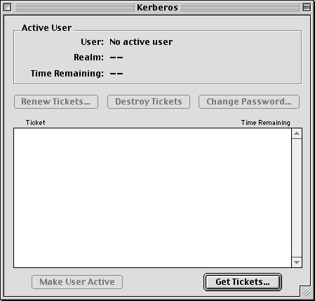
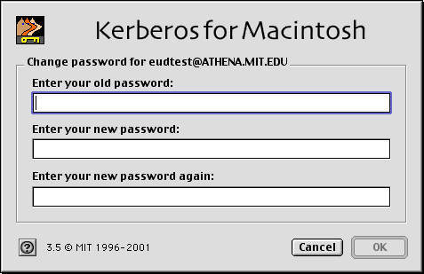
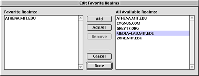

This web page has instructions for the Kerberos
control panel released as part of Kerberos for Macintosh 4.0.
|
|
If you encounter bugs or problems using the Kerberos control panel, please
send e-mail to <krbdev@mit.edu>.
If you're not familiar with Kerberos authentication and terms such as
Kerberos tickets, go to What Is Kerberos? to learn the concepts and terms.
|
|
|
|
|
Opening the Kerberos control panel
|
|
To open the Kerberos control panel,
From the Apple menu, choose Control Panels--Kerberos
Result: The Kerberos control panel window is displayed.

|
|
|
|
|
Obtaining Kerberos tickets
|
|
- Click on the Get Tickets button, choose Get
Tickets from Kerberos menu, or press <command>-N.
Result: The Kerberos Login dialog box appears:

The first time you use the Kerberos control panel to log in, the
username box is blank. After that, the Kerberos Login dialog box displays
the username of the person who last used it to log in, by default.
- Type your username in the username box.
If you want to log in using a principal that contains an instance
(if you are unfamiliar with this term, don't worry about it), choose
"Advanced" from the popup menu above "Username",
and the instance field will be revealed. Typing your instance into
the Username field will not work, you will get an error when you try to log in.
- Click once in the password box, or press the <tab>
key, and type your password.
- If you need to change realms, click once in the Realm popup list and
choose the desired realm. If the desired realm is not present in the
list, you will have to add it using the Edit
Favorite Realms feature, and then return to the Kerberos Login dialog.
- Click on OK.
Result: If authentication is successful, a ticket entry appears
in the Kerberos control panel window:

The Active User box indicates your username, the realm for which
your Kerberos tickets are valid, and the time remaining for which
they are valid. An item also appears in the ticket list.
By default, Kerberos tickets are valid for 10 hours. You can shorten
the duration for which tickets are valid at the time you log in. Refer
to Specifying ticket lifetime when logging in
for instructions on how to do this. You can also change the default
ticket lifetime. Refer to Changing Preferences
to find out how to do this.
If you get a Kerberos error, it may be for any of the following reasons:
- You've entered either your username or password incorrectly. Try
again, making sure that the CAPS LOCK key is not turned on.
- You may not have authorization to log into the realm specified.
If you're authorized to log into a different realm, refer to Adding
and removing realms to make another realm available, and then
choose it from the realms popup list when logging in.
- There is a problem with your authorization for the realm you're
using. Contact your site administrator.
To see details about your tickets, click once on the triangle next
to the username in the ticket list. See About
the ticket list for more information.
The Kerberos control panel allows more than one person to log into
the same Macintosh. An additional person can log in by completing
steps 1 - 4.
Each additional person who has logged in has an entry in the ticket
list:

The active user, i.e., the person whose tickets are used for authentication
when you start a new Kerberos-using application, appears in the Active
User box. This username is also underlined in the ticket list.
To change active users, follow the procedure in the next section,
Changing active users.
Once the duration of your tickets has ended, an "expired" message
appears:

Specifying ticket lifetime when logging in
If you want to change the length of time that your tickets are valid
upon logging in, you can do it through the Kerberos Login dialog box.
To do this,
- Click on the Get Tickets button, choose Get
Tickets from Kerberos menu, or press
<command>-N.
Result: The Kerberos Login dialog box appears.
- Click once on the Options... button.
Result: The Kerberos Options dialog appears:

- Place the mouse pointer on the Ticket Lifetime slider and drag
it to the desired time indicated above the slider.
- Click on the OK button, returning you to the
Kerberos Login dialog.
- Enter your username (if it's not already displayed) and password,
then click on OK.
Result:If your login is successful, you've obtained
tickets that are valid for the lifetime you specified.
The next time you log in, the lifetime of the tickets you obtain
will be the same as the time you specified during the previous login,
unless you repeat this procedure or force a constant
default lifetime (see Changing preferences for
instructions on how to do this).
|
|
|
|
Below the Active User box and Renew Tickets, Destroy Tickets, and Change
Password buttons is the ticket list. The ticket list shows all
the principals that are currently authenticated on the Macintosh.
Each principal has a set of Kerberos tickets belonging to it. When you
log in with Kerberos, you get a ticket-granting ticket which then
allows you to get other tickets from other applications (also called services).
Then for each application you run that requires Kerberos authentication,
you get a service ticket.
By default, the principals and their tickets appear as a summary line
in the ticket list. The summary lines are in bold text with a light gray
background. Each summary line has three elements:
- The Kerberos versions supported by the realm the principal is authenticated
in. This appears as "(v4/v5)", "(v4)", or "(v5)"
before the principal. When you log in using Kerberos for Macintosh,
it will attempt to get both Kerberos v4 and v5 tickets for your principal.
However, not all Kerberos-using sites support both versions, or different
realms at the same site may also support different versions, so you
may see only one version listed.
- The username of the authenticated principal.
- The minimum remaining lifetime for the ticket-granting tickets belonging
to the principal (displayed as hours:minutes). You receive one ticket-granting
ticket for each Kerberos version the realm supports; these may have
different expiration times (although Kerberos for Macintosh attempts
to make them the same).
Instead of a time, you may see either "expired" or "not valid" in the Time
Remaining column. "Expired" means that your tickets have no time remaining and
so are no longer valid; "not valid" means they are no longer valid for some
other reason, usually because your Mac's IP address has changed since you obtained
the tickets. In either case, you need to renew your tickets (although Kerberos for
Macintosh will also prompt you automatically to renew if you try to use a service
requiring Kerberos tickets).
If you want to see details of tickets associated with each principal,
click on the triangle at the left of the principal's summary line. The
list will expand:

In the expanded list, you will see a list of the tickets (credentials)
belonging to that principal. If the principal is authenticated for both
versions of Kerberos, the tickets are grouped by version underneath a
subheading for each version (see picture above). For Kerberos v5 tickets,
an "(F)" after the ticket name means the ticket is forwardable,
a "(P)" means the ticket is proxiable, and "(F,P)"
means the ticket is both forwardable and proxiable (see Changing
preferences for more information about forwardable and proxiable).
If you always want the ticket list to display expanded entries, you can
set the "Always expand new ticket list entries" preference.
See the Changing preferences section.
You can display even more detailed information about each ticket using
the Ticket Info window. See the Displaying ticket
information section.
|
|
|
|
|
The current, active user specifies which username will be used for authentication
when you work with an application that requires Kerberos authentication.
If more than one user is logged in, you may want to change the active
user before using such an application.
Use one of the following techniques to change the active user:
- Click once on the boldfaced username line in the list that you want
to be the active user, then click on the Make User Active
button.
- From the Kerberos menu, choose Change Active
User > username where username is the
user you want to make active.
- Double-click on the boldfaced username line in the Tickets list.
Result: The new active user is displayed in the Active User
box and also appears underlined in the ticket list.

|
|
|
|
|
To destroy tickets, select the boldfaced username line in the ticket
list then click on the Destroy Tickets button, or choose
Destroy Tickets from the Kerberos menu.
Result: The ticket entry is removed from the ticket list. If other
users are logged in, their usernames remain in the ticket list and their
tickets are valid for the remaining time indicated.
|
|
|
|
|
If your tickets have expired, or you want to extend the lifetime of existing
tickets, use the Renew Tickets command:
- Click once on your boldfaced username line in the ticket list to select
it.
Result: The Renew Tickets button is activated.

- Click on the Renew Tickets button, choose Renew
Tickets from the Kerberos menu, or press <command>-R.
Result:The Kerberos Login dialog box is displayed.
- Enter your password.
- If you want to change the lifetime of the tickets you're obtaining,
see Specifying ticket lifetime when logging in
for instructions.
- Click on OK.
Result: The tickets' lifetime is extended either to the
lifetime you specified when logging in or to the maximum duration
set under Preferences... (the default is 10 hours).
To change the default tickets' lifetime, see Changing
Preferences.
|
|
|
|
|
You can change your Kerberos password by using the Change Password...
command.
To change your password,
- Click on the boldfaced username line in the ticket list to select
it.
Result: The Change Password... button is
activated:
- Click on the Change Password... button or choose
Change Password... from the Kerberos
menu.
Result: The Kerberos Change Password dialog box appears
with the name of the user selected previously at the top:

- Enter the password you're using now in the "Enter your old password"
box.
- Click once in the "Enter your new password" box, or press the <tab>
key, and type the new password.
- Click once in the "Enter your new password again" box, or press the
<tab> key, and type the new password a second
time, exactly as you typed in the previous step.
- Click on OK.
Result: Either you will receive a confirmation that your
password hss been changed, if you entered either
your old password incorrectly or the entries for the new password
don't match exactly, you'll get an error. You may also receive an error
from the Kerberos server if you try to choose an insecure password.
This password stays in effect until you change it again using either
the Kerberos control panel or the equivalent procedure on another
Kerberos client on another platform.
|
|
|
|
|
Adding and removing realms
|
|
A default Kerberos realm is specified by the Kerberos Preferences file
(as distributed from MIT, this realm is ATHENA.MIT.EDU). When using the
Kerberos control panel to log in, by default the Kerberos username and
password entered are checked for authorization in this area of the network.
You can add other realms, as described in this section, and change which
one Kerberos Login uses by default. (For instructions on how to change
the default realm, see Changing Preferences.)
Other realms listed in the Kerberos Preferences file can also be used
for logging in, but must first be added to the list of "favorite"
realms which are displayed in the Kerberos Login dialog. The Kerberos
control panel has a feature called Edit Favorite Realms that provides
the following options for making the other realms in Kerberos Preferences
available for use:
- You can add one or multiple realms from the Kerberos Preferences file
to the Favorite Realms List.
- If you want to keep the list of Favorite realms to the minimum that
you need, you can remove realms from the Favorite Realms List.
Although other realms may exist besides the ones through the Edit Favorite
Realms feature, you can only add or remove realms listed in the Kerberos
Preferences file. (For information on adding new realms to the Kerberos
preferences file, see the Kerberos Preferences Documentation.
Generally you should not have to do this, consult with your system administrator
first!)
To add and remove realms,
- From the Edit menu, choose Edit Favorite
Realms... or press <command>-E.
Result: The Edit Favorite Realms dialog box appears:

- Do any of the following:
- Click once on the realm that you want to add in the All Available
Realms side of the dialog box, then click on Add
to add the selected realm to the Favorite Realms list.
Result: The selected realm is moved to the Favorite
Realms list:

- Click on Add All to add all of the realms from
the All Available Realms list to the Favorite Realms list.
Result:The remaining realms in the All Available Realms
list are moved to the Favorite Realms list:

- Click once on the realm that you want to remove in the Favorite
Realms dialog box, then, click on Remove to remove
the selected realm from the Favorite Realms list.
Result: The selected realm is removed from the Favorite
Realms list:

NOTE: At least one realm is required in the Favorite Realms list.
- When you have finished adding and/or removing realms, click on Done.
Result:If you've added one or more realms, they are now
available from the Kerberos Login dialog box. If you've removed any
realms, they are no longer available for use unless you add them again
later on.
To find out how to change the default realm, refer to Changing
preferences.
|
|
|
|
|
Displaying ticket information
|
|
If you are interested in more ticket information, the Kerberos control
panel can display detailed information about each Kerberos ticket by using
the Get Ticket Info command. To display detailed ticket information:
- Select a ticket entry in the ticket list of the Kerberos control panel's
ticket list. (Note that you can only get info about individual ticket items -
the non-bold lines.)
- From the Kerberos menu, choose Get Ticket
Information, or press <command>-I.
Result: The Ticket Info window appears:

At the top of the ticket info window is the principal who owns the
ticket, the service that the ticket was obtained for, and the Kerberos
version of the ticket. The rest of the information is divided into several
panes for easier reading:
- Times - The exact time the ticket was issued, and
the start and end time that the ticket is valid for, all in local time.
Also a status field to tell you if the ticket is valid, expired, or
not valid for another reason.
- Flags (for v5 tickets only) - The properties, such
as forwardable and proxiable, of the ticket.
- IP Addresses - The IP addresses for which the ticket
is valid. V4 tickets can only have one address, so you will only see
one listed. V5 tickets may be valid for multiple or no addresses,
so you may see more than one or none listed, although typically you
will only see one listed.
- Encryption - For v4 tickets, lists the string to
key type of the ticket. For v5 tickets, lists both the session key
and service principal key encryption types of the ticket.
- When you are done looking at the ticket information, you can close
the Ticket Info window using its close box.
You can have more than one ticket info window open at once.
|
|
|
|
You can make certain customizations to the Kerberos control panel by
using the Preferences... command. These customizations
also affect the Kerberos Login dialog anytime another application brings
it up, and the Kerberos Floating Window.
- From the Edit menu, choose Preferences...
or press <command>-Y
Result:The Preferences dialog box appears:

- The Kerberos preferences are divided into several groups, with a tab
for each group. Click on the tab for the preferences you want to modify:
- Login Defaults - preferences that control the
default username and ticket options for the Kerberos Login dialog
- Display - preferences that control the way the
Kerberos control panel displays information
- Floating Window - preferences that control the
Kerberos Floating Window
- Lifetimes - preferences that control the minimum,
maximum, and default settings of the ticket lifetime slider in the
Kerberos Login dialog
- Make changes to any of the following:
- Login Defaults:
- Remember principal from last Kerberos login/Use this principal
information (default = "Remember principal from
last login"): This popup menu lets you chose whether to
retain the username, instance, and principal in the Kerberos
Login dialog box after each time you log in, or to use the options
specified in the Preferences dialog each time.
- Always use blank username (default) (only
applies if "Use this principal information" is
selected): The username and instance fields will always
be blank in the Kerberos Login dialog.
- Always use this username (only applies
if "Use this principal information" is selected):
The username field of the Kerberos dialog will always be
the specified username, and the instance field will always
be blank. (You can edit the username field to be something
different for a single login, but it will always return
to this user on next login.)
- Always use this realm (only applies if
"Use this principal information" is selected):
The realm selected from this popup will always appear as
the selected realm in the Kerberos Login dialog's realm
popup. If the realm you want is not in the popup list, use
the Edit Favorite Realms
to add realms, then return to the Preferences dialog and
choose the desired from the Realm popup list.
- Remember ticket options from last Kerberos login/Use these
ticket options (default = "Remember ticket options
from last login"): This popup menu lets you chose whether
to retain the forwardable, proxiable, and ticket lifetime options
in the Kerberos Login dialog box after each time you log in,
or to use the options specified in the Preferences dialog each
time.
- Forwardable tickets always (default=on)
(only applies if "Use these ticket options" is
selected): Tickets that you've obtained on your machine
are valid on another machine to which you are connecting.
(We recommend that you leave this option turned on.) Only
applies to Kerberos v5 tickets.
- Proxiable tickets always (default=off)
(only applies if "Use these ticket options" is
selected): Tickets are proxiable. Proxiable tickets are
used by some Windows 2000 Kerberos services, however, you
should not turn on proxiable tickets unless instructed to
do so by your system administrator. Only applies to Kerberos
v5 tickets.
- Ticket lifetime always (default=10 hours)
(only applies if "Use these ticket options" is
selected): To change the duration for tickets to be valid,
place the mouse pointer on the Ticket Lifetime slider and
drag it to desired time indicated above the slider. NOTE:
Changes you make to this setting take effect the next time
you obtain tickets. Any tickets that you currently have
maintain the lifetime that was set when you obtained them
- Display:
- Always expand new ticket list entries (default=off):
To have the full list of your individual tickets displayed in
the ticket list by default (as opposed to a summary of your tickets indicated
by your username) click once in the checkbox to activate it. See
About the ticket list for more details.
- Floating Window:
- Show floating window (default = off): If
this box is checked, the Kerberos Floating Window will be displayed.
- Floating window can be closed (default =
on): If this box is checked, the Kerberos Floating Window has a close
box and can be closed. (You'll have to use the "show floating
window" preference or tear the menu off the Kerberos Menu/Control Strip
to display it again.) Note that unlike in old versions of KClient,
closing the floating window does not destroy any tickets, it simply
hides the floating window.
- Show commands in floating window (default
= off): The Kerberos Floating Window has two states, a simple compact
state where only the usernames of the currently authenticated
users are displayed, or an expanded state where Get Ticket,
Destroy Tickets, and Renew Tickets commands are displayed along
with the authenticated users. If this box is checked, the floating window
is displayed in its expanded state with the commands. You can
also switch between the compact and expanded states of the floating window
by clicking on the zoom box in the floating window's title bar.
- Show remaining lifetime "pie" in floating
window (default = on): If this box is checked, a small
circle indicating the relative amount of time remaining until
the user's tickets expire is displayed next to each authenticated
user's name.
- For more information about the Kerberos Floating Window, see the Using
the Kerberos Floating Window documentation.
- Lifetimes:
- Using the edit fields in this preferences panel, you can set
the minimum and maximum range of the ticket lifetime slider
displayed by the Kerberos Login dialog. You can also set the default
ticket lifetime (this is the same as the "ticket lifetime
always" option in the Login Defaults preferences). These
settings only control the minimum and maximum lifetimes your
Macintosh requests from the Kerberos server; the Kerberos server
may not allow tickets longer or shorter than certain lifetimes.
(Defaults are 0:10:00 minimum, 10:00:00 maximum, and 10:00:00
default.)
- Click on OK to save the changes you've made.
|
|
|